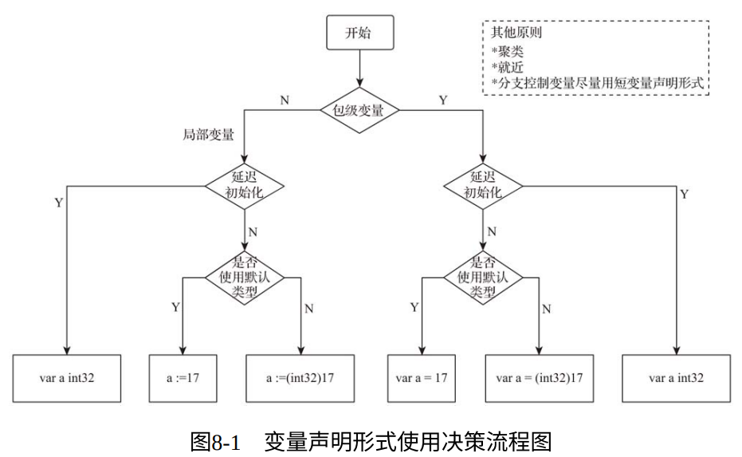

1. 包级变量的声明形式
包级变量只能使用带有 var 关键字的变量声明形式
1.1. 声明并同时显式初始化
此类包级变量在实践中多使用如下格式
var variableName = InitExpression
如果想要显式为包级变量指定类型，Go 语言官方更推荐下面的第二种方式：
// 第一种
var a int32 = 17
var a = int32(17)
1.2. 声明但延迟初始化
对于声明时并不显式初始化的包级变量，我们使用最基本的声明形式：
var a int 32
1.3. 声明聚类与就近原则
推荐将同一类的变量声明放在一个 var 块中；或者将延迟初始化的变量声明放在一个 var 块中
// $GOROOT/src/net/http/server.go
var (
bufioReaderPool sync.Pool
bufioWriter2kPool sync.Pool
bufioWriter4kPool sync.Pool
)
var copyBufPool = sync.Pool {
New: func() interface{} {
b := make([]byte, 32*1024)
return &b
},
}
...
// $GOROOT/src/net/net.go
var (
aLongTimeAgo = time.Unix(1, 0)
noDeadline = time.Time{}
noCancel = (chan struct{})(nil)
)
var threadLimit chan struct{}
...
- 在实践中，是否应当将包级变量的声明全部集中于源文件头部呢？或者遵守 就近原则 ，尽可能在靠近第一次使用变量的位置声明该变量
- 如果一个包级变量仅在一处使用，则遵守就近原则；如果一个包级变量在包内部被多处使用，则放在源文件头部更好
2. 局部变量的声明形式
相比于包级变量，局部变量多了一种短变量声明形式。
2.1. 延迟初始化的局部变量声明
采用带有 var 关键字的声明形式
// $GOROOT/src/strings/replace.go
func (r *byteReplacer) Replace(s string) string {
var buf []byte // 延迟分配
for i := 0; i < len(s); i++ {
b := s[i]
if r[b] != b {
if buf == nil {
buf = []byte(s)
}
buf[i] = r[b]
}
}
if buf == nil {
return s
}
return string(buf)
}
2.2. 声明且显式初始化的局部变量
建议使用短变量声明形式
a := int32(17)
f := float32(3.14)
s := []byte("hello, gopher!")
2.3. 尽量在分支控制处应用短变量声明形式
// $GOROOT/src/net/net.go
func (v *Buffers) WriteTo(w io.Writer) (n int64, err error) {
// 笔者注：在if循环控制语句中使用短变量声明形式
if wv, ok := w.(buffersWriter); ok {
return wv.writeBuffers(v)
}
// 笔者注：在for条件控制语句中使用短变量声明形式
for _, b := range *v {
nb, err := w.Write(b)
n += int64(nb)
if err != nil {
v.consume(n)
return n, err
}
}
v.consume(n)
return n, nil
}
3. 小结
